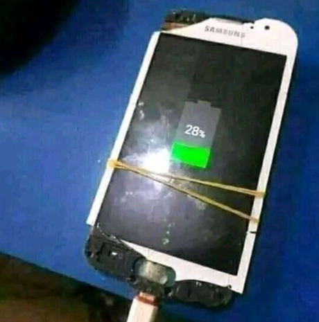

Vinicius Jr e Neymar desistem da Copa após assumirem relacionamento com MC Poze
Por: Mia Khalifa
Após assumirem publicamente o relacionamento com o Cantor MC Poze, os craques anunciam desistência da Copa do Mundo 2026. Ambos afirmam "O Endrick será o próximo. O amor vai prevalecer" dizem em entrevistas com Kid Bengala.
Video de Gacha Life é indicado ao Oscar
Por: Minion de Calcinha
O video "~ In love with my homophobic best friend | Gay | Glmm | Nugget ツ ~" recebeu quatro indicações ao Oscar após emocionar interlocutores com sua história tocante.

Como a Tecnologia pode impactar nas comunicações humanas
Por: Belle Delphine
Graças a internet, o modo de se comunicar mudou de forma drastica ao longo dos ultimos anos. Apesar de ter seus lados positivos, o uso continuo da tecnologia para a comunicação humuna também pode nos afetar de formas negativas. Abaixo, podemos ver alguns lados positivos e negativos de como isso nos afeta.
Pontos Positivos:
Aumentou a conexão global potencializando a globalização moderna; Hoje em dia, podemos nos comunicar com qualquer pessoa de qualquer lugar do mundo em tempo, sendo por texto, audio, video, lives, ligações, etc. Isso facilitou a colaboração internaciol e até mesmo aproximou familia e amigos.
Facilitou o acesso a informação; Isso faz que qualquer pessoa que tiver acesso a internet possa pesquisar, aprender e obter informações instanteneamente.
Auxilia e possibilita o trabalho e a educação em formato digital; Devido ao uso de internet, agora podemos usa-lá para estudar (EAD) e trabalhar (home office). Isso trouxe flexibilidade a rotina de estudantes e profissionais.
Pontos Negativos:
Sobrecarga de Informações; Como as informações são recebidas diariamente, nosso cérebro não consegue processá-las , causando estresse, ansiedade, cansaço mental, etc.
Fake News; Apesar de facilitar o acesso a informações, a internet possui informações falsas ou enganosas criadas para serem divulgadas como veridicas, seja para obter lucro financeiro, manipulação de opinião ou até mesmo prejudicar alguém.
Enfraquecimento de relações; O uso excessivo de dispositvos eletronicos muitas vezes substitui a interação presencial entre pessoas. Como resultado, isso pode causar isolamento social e afetar vinculos reais